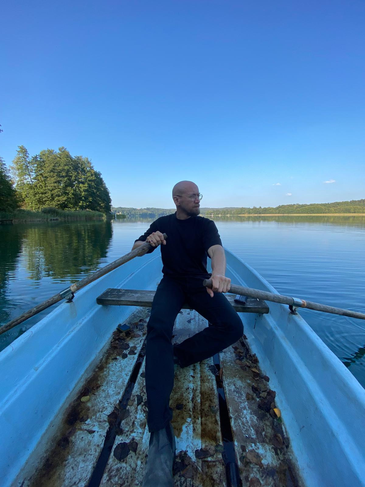
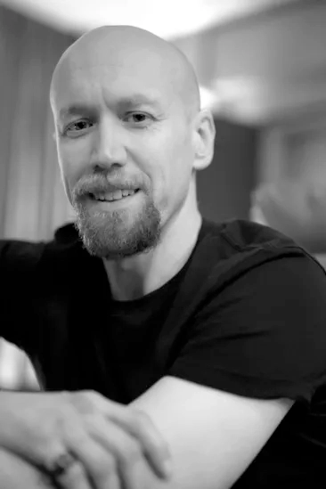

Coaching in English and German
Let's get you unstuck.
You're standing at a threshold. Maybe it's a decision you keep circling, an ending you didn't choose, or a beginning you're not sure you're ready for. I help you get clear on where you are, what you're choosing, and what comes next. I don't hand you answers. I help you find your own.

Coaching is a conversation that goes somewhere.
We look at your situation, the choices in front of you, and what's actually in your way. Then we keep looking until something shifts.
I hold space and provide structure. The work happens through you, not to you.
People usually come to me when something big is moving.
A decision you keep circling
You've made the lists and talked it through. You're still stuck, and you're tired of thinking about it.
A relationship that's changing
Something between you and someone important has shifted, and you don't know yet what you want.
A conflict you can't shake
You keep ending up in the same argument at work or at home, and you suspect it's about more than the argument.
An ending you're still carrying
A goodbye, a loss, or a door that closed is still asking something of you, and you want to answer it.
Here's how we'd work together.
-
We start with a conversation.
You tell me what's going on, and we both find out whether this is a good fit. The first call is free.
-
We meet for sessions.
Sessions are 60 minutes long. We meet online, or in person when we're in the same city, in English or German. We set the rhythm together.
-
Sometimes we write a song.
If it helps, we turn what came up into a song you can keep and sing. It's optional. Some people want it, and some don't.

About me
I've been writing songs since I was 13, and I've spent the years since split between music and a quieter track: a doctorate in the sociology of religion, time in monasteries, and training in how people work through what's hard.
I've led groups for about fifteen years, and I've spent a decade designing ritual spaces for people navigating what matters most. I've sat with people through their hardest moments. I'm not a teacher, but I'm an adept practitioner.
My coaching draws on all of it: academic training in how meaning-making works, musical practice, contemplative training, and years of holding space when things fall apart.
I also make songs with people through Agapic Chants, and I founded Respond.
“We mapped a recent professional conflict I had back to some much deeper issues and then transformed those old associations into an empowering sense of being reborn. And then … in a surprising twist — Nathan and I wrote a song about it!”
“This wasn't a one off... interacting with Nathan and his work has done some significant course-consolidation in my life.”
Coaching isn't therapy.
It doesn't replace psychotherapy or medical care. If I think a therapist or a doctor would serve you better, I'll tell you, and we'll talk honestly about what that means for our work.
The practical side
- Sessions
- 60 minutes · [YOUR PRICE]
- Where
- Online, or in person
- Language
- English or German
- Contact
- nathanvanderpoolphd@gmail.com
If something's stuck, write to me.
Tell me a little about what's going on. I'll write back, and we'll find a time to talk.